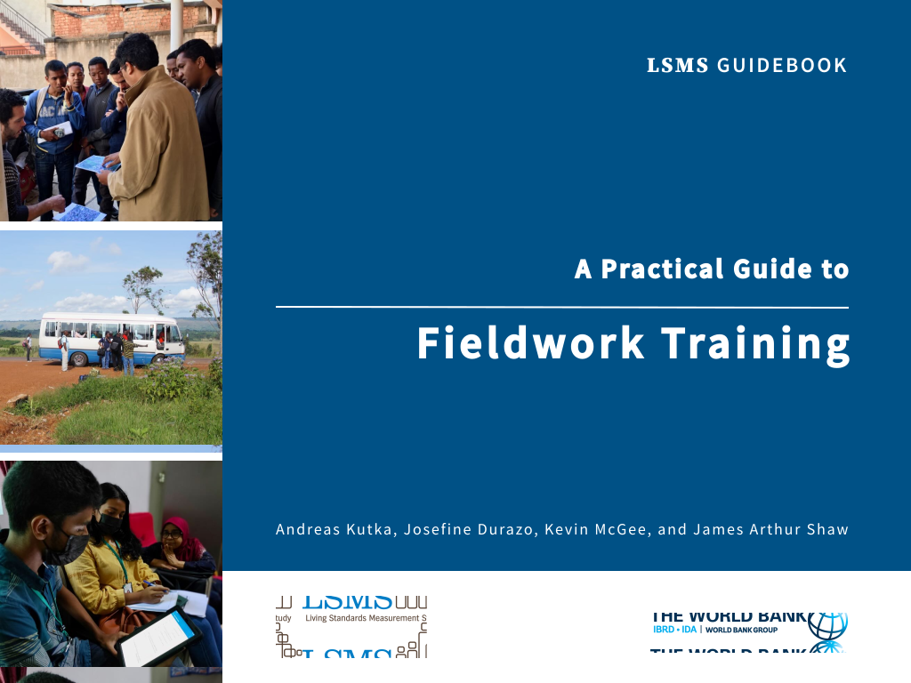

A Practical Guide to Fieldwork Training
Welcome!


Warning: Hello there. Thanks for dropping by. However, you have come a bit early. This book is still work in progress and currently under review. PLEASE DO NOT SHARE. We look forward to seeing you back here soon, when everything is ready.
Version 1.0.
Last updated on 29 May 2023.
About this guide
Undoubtedly, fieldwork training is one of the most crucial activities of any survey and significantly influences the quality of the collected data. However, in many surveys, it is not as effective as it could be, leading to suboptimal data quality. This guide provides actionable advice for successfully planning and delivering effective fieldwork training, which prepares field workers to collect high-quality data, without overburdening trainers or overstretching survey resources.
This guide is a valuable resource for a diverse range of survey practitioners. Survey designers and funders can benefit from guidance on the resources necessary for successful fieldwork training. Meanwhile, survey and fieldwork managers, as well as trainers, will find practical tools and tips on how to plan, prepare, and implement fieldwork training that is both effective and efficient. Refer to below chapter summaries to find out which part(s) may be most beneficial to you.
This guide is organized into 4 Chapters:
Chapter 1 Essentials outlines the main objectives that fieldworker training should aim to accomplish and provides a summary of key recommendations on how to effectively achieve them. If you’re short on time and need a quick overview, this chapter is for you!
Chapter 2 Planning and preparation is targeted at anyone involved in the planning and preparation of fieldwork training, from survey funders to survey or fieldwork managers and trainers. It covers important aspects such as training location, timing, size, trainers, content, and schedules, and provides checklists to ensure nothing is missed before the training.
Chapter 3 Conducting the training is a valuable resource for trainers looking to conduct effective and efficient fieldwork training. It offers comprehensive details and step-by-step guides for different training modules. It is a highly recommended read for trainers while preparing for and conducting the training.
Chapter 4 Assess & select fieldworkers explains how to implement a competitive, skill-based fieldworker selection process that is crucial for achieving high-quality surveys. It is primarily aimed at trainers and offers step-by-step guides on how to effectively implement written tests, systematically evaluate skills, and ultimately select fieldworkers. Survey designers and managers may be interested in reading about the benefits of this approach that are summarized at the beginning of the chapter.
The recommendations in this guide should be considered as a helpful resource rather than a prescriptive solution. Although the methodology presented has proven effective in delivering successful fieldwork training, survey practitioners are encouraged to evaluate which improvements can be implemented given the context and constraints of their respective survey.
This guide is written with reference to training for an LSMS-style surveys, i.e., in-person training for medium- to large-scale household surveys that cover a range of socioeconomic topics and implemented using CAPI (with specific guidance for Survey Solutions). However, most recommendations can be easily adapted to other survey types, modes, or software packages.
This guidebook is the first in a series of Practical Guides to Survey Quality, developed by the Living Standards Measurement Study (LSMS) team.
About this series
In the world of international development, surveys play a crucial role in informing official statistics, public policy design, and social research. There are flagship and long-standing survey programs such as the LSMS, Multiple Indicator Cluster Surveys (MICS), and Demographic and Health Surveys (DHS) that are widely recognized as methodologically sound and producing high-quality data. However, all too often there are other surveys that adopt suboptimal methods, leading to poor-quality data due to either a lack of capacity or scarcity of resources. Given that surveys are a crucial (and often the only) source of data on socioeconomic indicators available for decision making in the developing world, it is paramount that they are of the highest possible quality.
To address this issue, the LSMS team is developing a guidebook series aimed at steering survey practitioners away from bad practices and pointing them towards proven best practices that improve survey quality - even in a resource-constrained environment. The guidebook series will produce guides for all stages of the survey life cycle from inception, design, preparation, fieldwork training, fieldwork to post-fieldwork.
Each guide in the series will provide practical and actionable guidance to optimize survey quality, including available knowledge, best practices, and practical tips. The guidebooks draw from other existing guidelines, previous similar efforts, as well as insights from the academic survey methodology literature. Perhaps more importantly, they drawn from the extensive experience of internal and external survey experts in designing and implementing complex large-scale surveys, most notably LSMS surveys that serve as the backbone of welfare and poverty measurement throughout the developing world.
Survey methodology is constantly evolving with innovative approaches to data quality assurance continually being identified, particularly with advancement of technology. As such, guides part of this series are published as eBooks online, intended to be a living documents featuring new expansions and revisions on a semi-continuous basis.
LSMS guidebooks. This series and other LSMS guidebooks offer information on best practices related to survey design and implementation. While the Guidebooks differ in scope, length, and style, they share a common objective: to provide statistical agencies, researchers, and practitioners with rigorous yet practical guidance on a range of issues related to designing and fielding high-quality household surveys. The series draws on experience accumulated from decades of LSMS survey implementation, the expertise of LSMS staff and other survey experts, and new research using LSMS data and methodological validation studies. Find all the LSMS guidebooks here.
About LSMS. The Living Standards Measurement Study (LSMS), a survey program housed within the World Bank’s Development Data Group, provides technical assistance to national statistical offices in the design and implementation of multi-topic household surveys. Since its inception in the early 1980s, the LSMS program has worked with dozens of statistical offices around the world, generating high-quality data, developing innovative technologies and improved survey methodologies, and building technical capacity. The LSMS team also provides technical support across the World Bank in the design and implementation of household surveys and in the measurement and monitoring of poverty.
How to use this (e)book
Hit the highlights. Read the essentials and the beginning of (sub-)chapters of interest. Most start by explaining the rationale, main objectives and context, before diving into detail.
Read in detail. The guide is relatively extensive and contains many details. It is not written to be read in one go (we applaud your stamina if you do), but rather as a go-to reference that can be visited multiple times during a survey to get relevant practical advice and learn about best practices. Read relevant chapters as you start to plan survey phase and revisit them during implementation for all the details.
Navigate. Use the Table of Content (ToC) bar on the left to quickly navigate between different chapters of the book. Clicking on a chapter in the ToC unfolds all sub-chapters. The right/left arrows on the side of the main text navigate to the next/previous chapter. Links in the text take you to external resources or other chapters of the book providing more details.
Find. Use the search function to quickly find all occurrences of a word or phrase. Open the search function by clicking on the search icon on top or by typing f on your keyboard. Use the up and down arrow keys to navigate between different search matches.
Edit. You can edit the book! Yes, you read this correctly. If you come across anything that you think could be improved, from correcting typos to adding content to chapters, click on the edit icon on top. This will open the underlying file on github where you can make the modifications and submit them as a pull request (you will need a GitHub account). The book is written using Rmarkdown in Bookdown. For most parts of the text, the syntax follows simple markup language, of which you can learn the basics in under 2 minutes. (For more experienced GitHub & Bookdown user, you can fork the depository and make commits). If accepted, your suggestions will be added with the next version.
Comment. If you have any suggestions but prefer to not edit the book, please list an issue on GitHub or email the authors. Thank you!
Share. You can share the book or any chapter using the sharing icons on the top right. Each chapter and sub-chapter have specific links. Copy the link, either by right clicking on the blue # icon next to the heading and copying the link address, or by clicking on the (sub)chapter in the table of content and copying the URL from the browser.